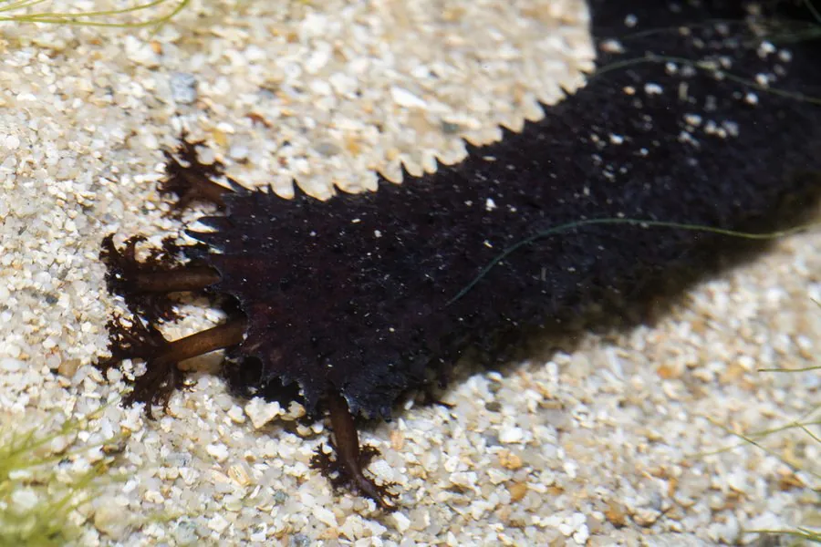

其他无脊椎动物 · 动物界
玉足海参 Holothuria leucospilota

体表黑褐、管足带白色的热带海参，栖于珊瑚礁浅水沙底，受惊时喷出黏性居维氏管自卫，可供食用。
- 分类
- 门棘皮动物门纲海参纲目楯手目科海参科属海参属
- 栖息环境
- 热带珊瑚礁礁坪、潟湖沙底与珊瑚碎石区
- 地理分布
- 印度洋至西太平洋热带海域，中国南海及东南亚、澳大利亚北部
- 保护级别
- 野生资源因过度采捕下降，多国实行采捕限制并发展养殖
物种志
玉足海参的体长约二十至三十厘米，体呈圆筒形，体壁厚实，背面黑褐至灰黑色，腹面颜色较浅，管足密集，末端常带白色，玉足之名由此而来。体表散布疣足和细小突起，口周围有二十枚枝状触手，用于抓取沙粒送入口中。它行动缓慢，靠管足在沙底爬行。
它分布于印度洋至西太平洋的热带珊瑚礁，从东非、东南亚到中国南海和澳大利亚北部，栖息在礁坪、潟湖的沙底和珊瑚碎石区。它以触手抓取含有机质的沙粒，是海底的清道夫。受惊时它会从肛门喷出白色的居维氏管，黏住天敌后自行断落，随后再生。它是食用海参的一种，在东南亚和中国南方被大量采捕，野生资源下降明显，现已开展人工增养殖。
形态与习性
- 体长约二十至三十厘米，圆筒形
- 体色背面黑褐，管足末端白色
- 触手口周二十枚枝状触手
- 食性吞食含有机质的沙粒
- 防御受惊喷出白色居维氏管，可断落再生
- 利用食用海参，已开展人工增养殖
趣味知识
- 被抓住时它从屁股喷出一团白色黏丝，把对手缠住，自己趁机逃走。
- 它把沙吞进去，消化掉有机质再把沙排出来，等于给海底筛了一遍。
- 它腹面的管足末端发白，玉足海参的名字就是这么来的。